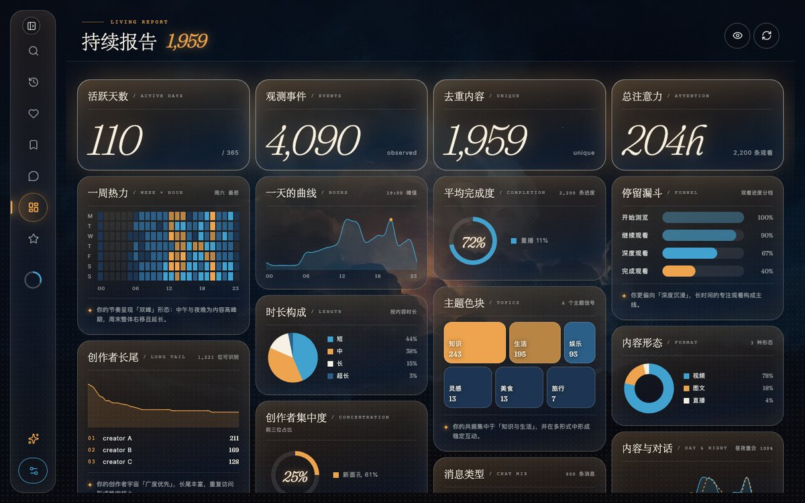

DouyinDataReview
抖音数据导出与年度报告工作台。把你的抖音数据，留在自己的电脑上。
下载桌面版
版本与校验值以 GitHub 最新发布为准。
DouyinDataReview 能做什么？
DouyinDataReview 是免费开源的抖音数据导出与年度报告桌面应用，支持 Windows x64 和 macOS Apple Silicon。它保存本人账号可访问的观看历史、喜欢、收藏和好友聊天记录，可选择导出为 JSON，并在本机生成抖音年度回顾（Douyin Wrapped）；还能在电脑上刷抖音推荐、按关键词屏蔽不想看的视频、把想看的词条混进推荐、查看本人创作者中心数据，并提供可选的 AI 助手。
- 项目性质
- 独立开发的非官方开源工具，与抖音及字节跳动无隶属、授权或合作关系。
- 支持平台
- Windows 10 / 11 x64；macOS Apple Silicon（M1 及更新）；界面语言为中文。
- 数据来源
- 本人账号可访问的抖音接口、本应用备份，或抖音官方个人信息下载档案；面向抖音（Douyin），不支持国际版 TikTok。
- 导出与报告
- 记录按勾选项导出 JSON，聊天默认不勾选，聊天里的语音导出时经抖音转成文字；年度报告可导出独立 HTML 和 1080 × 1440 PNG。
- 费用与许可
- 应用免费，源码采用 MIT 许可；本地统计与年度报告不需要 AI 服务。
- 本地与联网
- 记录保存和报告统计在本机完成；在线采集需要联网及有效登录凭据；默认不调用 AI 服务，可选的 AI 助手装上后才会把对话发给你自己配的模型。
- 读取并保存抖音观看历史、喜欢和收藏，每类不限条数，关掉窗口后留在托盘里定时补读
- 在电脑上刷抖音首页推荐，能看评论、点赞收藏、下载当前视频，进工作台默认就是这一页
- 实时接收和回复抖音聊天，有续火花看板，能一键给勾选的人续火花
- 在工作台里看自己创作者中心的数据总览、作品数据、粉丝画像和评论分析，评论管理里能发评论和回复
- 内容库按标题、作者、话题搜索，视频能在应用里播放或下载到本地，默认存到「下载/抖音视频」；「我的评论」能看自己发过的评论和收到的回复
- 按勾选项导出 JSON 备份，聊天里的语音导出时转成文字，换电脑可导入；也可导入抖音官方 JSON / ZIP 档案
- 按关键词、作者、话题屏蔽推荐里不想看的视频，把想看的词条混进推荐，也可以只看词条；软件和 Chrome、Edge 网页都能用，见推荐流控制
- 看关注的人的直播和弹幕，「使用记录」记下每天在这台电脑上刷了多久
- 可选的 AI 助手：用对话查自己的记录、替你用应用的功能，Claude Code、Codex 也能通过 MCP 调用
- 生成年度报告和持续报告，年度回顾可导出独立 HTML 与 PNG 分享图
- 播放器内按需发起 AI 视频解析，查看带原片时间的结果并跳转播放
具体操作见数据导出步骤、年度报告指南与数据去向说明。在线采集不保证取回全部历史，群聊正文不写入备份。
安装与首次登录
桌面版自带采集器，在首屏用抖音 App 扫码、核对账号并确认导入即可读取，不需要另外安装浏览器或扩展。分别勾选要读取的视频记录和聊天，首次默认只勾选视频。源码运行和浏览器导入方式见README 快速开始。
macOS：打开 dmg，把「DouyinDataReview」拖进「应用程序」。安装包没有开发者签名，第一次打开前先在「终端」里运行下面这行，不然会提示“应用已损坏”：
xattr -cr "/Applications/DouyinDataReview.app"
Mac 版没法在应用里自动更新，出新版本时回到这里重新下载，覆盖安装就行，已经采集的数据不会丢。旧版名为「内容数据工作台」，替换时移除旧应用即可，本地数据目录继续沿用。
Windows：运行安装程序。如果弹出 SmartScreen 提示，先点「更多信息」，再点「仍要运行」。以后的新版本可以在应用里直接更新。
核对安装包是否完整（SHA-256）
加速线路由第三方转发。担心文件被改过的话，可以对照下面的校验值：macOS 在终端运行 shasum -a 256 文件名，Windows 在 PowerShell 运行 Get-FileHash 文件名。
暂时拿不到校验值，请到 GitHub 发布页查看。
抖音年度报告示例
不用安装，可以先在浏览器里翻一份示例年度报告，三种风格任选：内容年志 · 档案馆 · 海报。里面是编出来的演示数据，不是谁的真实记录。电脑和手机都能打开。

常见问题
DouyinDataReview 是什么？适合谁用？
DouyinDataReview 是免费开源的抖音数据导出与分析桌面应用，适合备份本人抖音观看历史、喜欢、收藏和好友聊天记录，整理内容库、在电脑上刷抖音推荐、查看创作者数据，以及制作个人年度回顾。它是独立开发的非官方工具，面向抖音（Douyin），不支持国际版 TikTok。
怎么导出抖音观看历史和聊天记录？
安装桌面版，在首屏用抖音 App 扫码，核对账号并勾选「读取视频」和／或「读取聊天」后确认导入。读取完成后，在「设置 → 数据」点「导出数据」，勾选需要的观看历史、喜欢、收藏或聊天，保存为 JSON。聊天默认不勾选，导出不会重新读取记录；勾选聊天时，语音消息会经抖音转成文字写进文件，这一步需要联网并登着原账号。聊天备份含已保存的好友消息及会话信息，不含群聊正文。
能导出全部抖音历史记录吗？
不能保证。DouyinDataReview 只能读取抖音接口当前返回且本人账号有权访问的记录，无法恢复接口已经不提供的数据。年度报告只反映已保存记录及其日期和字段；持续采集可以积累记录，也可导入抖音官方个人信息下载档案补充分析。
抖音收藏有几万条，能全部备份吗？
DouyinDataReview 不限制观看历史、喜欢、收藏每类的条数，全部记录合计能存约 38 万条，快存满时会提示，已经存好的记录不受影响；记录变多后，每页的读取速度也不会跟着变慢。能读到多少取决于抖音接口当前返回的内容，不保证取全。中途某一类读取出错时，已读到的部分会先留下。
抖音官方「个人信息下载」的档案能直接用吗？
能。在「连接与采集」页「或者导入个人档案」处点「选择文件」，选择官方导出的 JSON 或 ZIP，可不登录抖音生成报告。可用统计取决于档案实际包含的字段和日期；该导入仅在本次打开期间使用，关闭应用后需重新导入。
登录需要安装浏览器扩展或一直开着浏览器吗？
登录不需要扩展；只有在浏览器网页上过滤推荐才要在 Chrome 或 Edge 装一次扩展，软件里刷视频不用装。桌面版可在首屏扫码登录并导入凭据，无需另外配置浏览器。从源码运行时，可通过 Chrome 144+、带远程调试开关的 Edge 或 macOS Comet 导入本人登录凭据。导入成功后自动断开；凭据有效时可关闭浏览器继续采集，失效或需要验证时重新登录并导入。
有没有像 Spotify Wrapped 那样的抖音年度报告？
有。DouyinDataReview 用本机保存的观看、喜欢、收藏和聊天记录生成抖音年度回顾（Douyin Wrapped），提供内容年志、档案馆和海报三种风格，可导出独立 HTML 与 1080 × 1440 的 PNG 分享图。报告不需要 AI 接口，数据不全时也不会补造缺失记录。此页的示例报告使用合成数据，可免安装预览。
能批量下载抖音里喜欢和收藏的视频吗？
能。内容库点「批量下载」进入多选，选中的视频会打包成 ZIP 保存到本机；图文作品会下载全部图片。探索页的用户主页也支持下载作品。在线下载需要网络、有效会话，以及当前账号可访问的作品。
下载的抖音视频存在哪里？能改位置吗？
DouyinDataReview 桌面版把下载的视频、图文和批量 ZIP 默认存到系统「下载」文件夹里的「抖音视频」，不用每次选位置。要换地方，到「设置 → 数据」的「视频下载位置」点「更改」，点「打开」能直接打开这个文件夹。
怎么查看自己在抖音发过的评论和收到的回复？
DouyinDataReview 读取记录时会顺带整理抖音的评论通知，内容库的「我的评论」列出你发过的评论和评论下收到的回复，在应用里发的评论也会记进去。它不是完整的评论历史：抖音的通知只留最近 100 条，只有收到过回复的评论才读得到；每次读取都会并进本机，所以读得越早攒得越多。这些评论目前只能在应用里看，不写进 JSON 导出文件。
能看到自己每天刷了多久抖音吗？
能看到这台电脑上的时长。DouyinDataReview 右上角的「使用记录」记下每次打开软件窗口和浏览器抖音网页的开始、结束时间和时长，重叠的时段只算一次，记录存在本机。浏览器网页不用装扩展，但要先打开浏览器的远程调试，每次连接时点允许，可在「设置 → 读取」打开自动连接；页面留在后台的时间也算在内。手机上刷的时间记不到。
能导出抖音创作者中心的作品数据和粉丝画像吗？
能，只限登录的本人账号。在「创作者中心 → 作品管理」点「导出表格」，会翻完全部作品，把发布时间、描述、播放、点赞、评论、分享、收藏、完播率、2 秒跳出率等指标存成 CSV；「数据中心」的粉丝画像也能导出性别、年龄、活跃度、设备、地域和兴趣分布。私密、审核中的作品和创作者中心一样不给指标；粉丝满 300 才有画像。
能在电脑上刷抖音推荐吗？
能。DouyinDataReview 进工作台默认打开「刷视频」，播放器嵌在页面里，接着本人账号的首页推荐往下刷，可以看评论、点赞收藏，或把当前视频下载到本机。直播和广告不放进来；刷到的视频会像在网页上一样记进抖音观看历史。点赞、收藏、评论要先在「设置 → 隐私」打开「允许在抖音上操作」。
电脑上刷抖音能按关键词屏蔽不想看的视频吗？
能。手机上可以用抖音 App 自带的屏蔽设置，入口以当前版本为准；在电脑上，可以用 DouyinDataReview 的「设置 → 推荐流」写屏蔽词条，一行一个词，可以限定只匹配标题、作者、话题或音乐，也支持正则。软件里刷视频直接生效；想在 Chrome、Edge 刷抖音网页时也过滤，就装一次应用自带的扩展。有三种处理方式：只记录不拦、隐藏、隐藏后替你点「不感兴趣」（只有网页上会点，每分钟最多 6 条）。被挡掉的视频能在内容库「推荐流挡掉的」里翻到。网页上已经显示的首屏和作品详情拦不掉，只记录命中，后面加载的推荐才会过滤。
能让抖音多推想看的内容，或者只看某个词条吗？
能。在 DouyinDataReview 的「设置 → 推荐流」填想看的词条（最多 20 个），应用用本人账号搜这些词，把相关视频插进推荐，频率可选每 1、2、3、5、10 条插一条，也可以选「只看词条」。软件和网页共用这份设置，网页上要装扩展并打开「网页插入视频」。命中屏蔽词的视频不会插入，搜索失败时照常刷推荐。视频是在你这边插进去的，不等于改了抖音给账号的推荐算法。
有 AI 助手吗？能接 Claude Code 或 Codex 吗？
有，可选、默认不装，在「设置 → AI」安装。它能用对话查本人的观看记录、私信和创作者数据，或替你搜抖音、下载作品、整理文件夹、开始读取；模型用你自己填的 OpenAI 兼容接口，或本机的 Codex / Claude Code。应用开着时还在本机提供 MCP 接口，Claude Code、Codex 可以直接调用同一套功能。发私信、点赞、评论这类别人看得到的操作，每次都要你在应用里点「允许」。
收费吗？数据会传到哪里？
应用免费、源码采用 MIT 许可。个人记录保存和报告统计在本机完成；在线采集和互动需要请求抖音，默认不调用 AI 服务。使用可选的 AI 助手时，对话和它为回答查到的数据会交给你配置的模型接口或本机 Codex / Claude Code。主动使用视频解析时，需要转写的音轨会交给语音识别服务，文字、关键帧会交给你配置的模型接口或本机 Codex / Claude Code，做分镜脚本时还可能把整段视频交给模型接口。登录凭据和个人备份应由本人保管。
会被封号吗？
没法保证不会。工具使用本人账号导入的会话，但采集依赖抖音未公开承诺的私有接口，接口变化可能导致功能失效或触发账号风控。请仅用于本人账号和个人数据管理；发送消息、点赞和评论等操作由用户主动触发。
支持哪些系统？能在手机或 Intel Mac 上安装吗？
已提供的桌面安装包支持 Windows 10 / 11 x64 和 macOS Apple Silicon（M1 及更新）。目前没有原生手机安装包、Intel Mac 安装包或 Linux 安装包。开发者可从源码运行 Web 工作台；手机在可信局域网连接电脑采集器的方式见仓库 README。
In English
DouyinDataReview is a free, MIT-licensed desktop app for Windows x64 and macOS Apple Silicon. Export your own Douyin watch history, likes, favorites and saved friend chats as JSON, import an official Douyin JSON / ZIP archive, and generate a local year-in-review (Douyin Wrapped) as HTML or PNG. You can also browse your Douyin home feed inside the app, view your Creator Center stats and reply to comments, block feed videos by keyword, mix videos from topics you choose into the feed, review your own comments and replies, and use an optional AI assistant that Claude Code and Codex can also reach over MCP. Group chat bodies are excluded from backups, and a complete lifetime history is not guaranteed. It targets Douyin in China; international TikTok is not supported. The interface is in Chinese. You can start AI video analysis directly in the player and jump to the source timestamps in its results. See the data flow guide.
交流与反馈

QQ 群 DDDouyin，群号 1124211302
也可以直接加 QQ 940537208
不方便进群的话，遇到的问题和想要的功能也可以写进问卷：填写反馈问卷